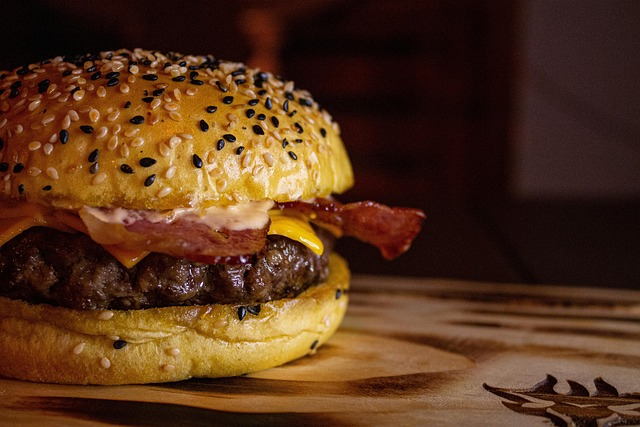
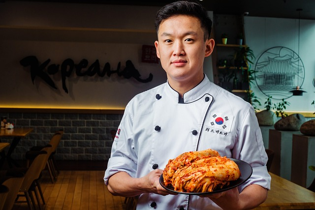

HamBurger

Golden, toasted buns embrace a juicy, flame-grilled patty, layered with melted cheese, crisp lettuce,
ripe tomatoes,
tangy pickles, and a drizzle of creamy sauce. This burger is more than a meal—it's a symphony of
textures and flavors,
crafted to satisfy the soul. Whether classic or gourmet, every bite tells a story of comfort,
indulgence, and culinary
artistry. Born from backyard grills and gourmet kitchens alike, the hamburger is a timeless icon of
joy, wrapped in
simplicity and served with love. Bite in, savor the warmth, and let this handheld masterpiece take
your taste buds on a
delicious journey.
Una Pizza

Una Pizza is more than a pizzeria — it's a celebration of tradition, taste, and togetherness. Crafted
with love and
baked to perfection in wood-fired ovens, every pizza tells a story of authentic Italian roots
blended with modern flair.
From the freshest ingredients to the warm, rustic ambiance, Una Pizza offers an unforgettable
experience that delights
the senses. Whether you're sharing a meal with friends or savoring a quiet slice, each bite brings
comfort, joy, and a
little piece of Italy. Come for the pizza, stay for the passion — Una Pizza is where every moment is
made delicious.
Chef Wang-Li

Chef Wang-Li is a celebrated culinary artist known for blending tradition with innovation in every
dish. With roots
deeply embedded in classic Asian cuisine and a flair for contemporary techniques, Chef Wang-Li
transforms simple
ingredients into unforgettable culinary experiences. From the bustling streets of Beijing to the
finest global kitchens,
his journey has been one of passion, precision, and purpose. Whether crafting delicate dim sum or
bold fusion creations,
Chef Wang-Li brings heart, heritage, and harmony to the plate—earning admiration from food lovers
around the world.